Navegação: ← Anterior | Sumário | Próximo →
8. LEVANTAMENTOS DE TRÁFEGO¶
8.1 Metodologia dos levantamentos¶
Os levantamentos de tráfego foram organizados por estações de contagem, com consolidação em planilhas específicas por ponto. O estudo registra contagens classificatórias e direcionais, com tratamento por movimento, classe veicular, UCP e período de observação. Em parte dos pontos, o levantamento corresponde a janela contínua de 24 horas; 12 horas e em outros, corresponde a janelas de curta duração com projeção para uma hora.
| Aspecto | Especificação |
|---|---|
| Tipo de levantamento | Contagem classificatória e direcional |
| Unidade de análise | Veículos e UCP, quando aplicável |
| Período | 24 h contínuas ou janelas com projeção para 1 h, conforme arquivo de origem |
| Classes veiculares | Motocicleta, veículo leve, caminhão pequeno, caminhão médio, Ônibus urbano e caminhão pesado articulado |
| Direcionalidade | Movimentos A-B, B-C, A-C ou equivalentes, conforme croqui de cada estação |
| Consolidação | Planilhas por ponto de contagem, com abas de fluxos, UCP, perfis horários e gráficos quando disponíveis |
Tabela 8.1 - Especificação geral dos levantamentos de tráfego
Os volumes de campo alimentam a calibração dos movimentos nos arquivos HCM-LOS. Quando não existe medição direta para determinado movimento ou trecho, o tratamento de lacunas e compatibilizações é descrito no Capítulo 9, sem transformar estimativas de fechamento operacional em contagens autônomas.
8.2 Datas, períodos, unidades e classificação veicular¶
A estrutura dos arquivos de contagem varia conforme o ponto. Os pontos P01, P03, P04, P06 e P07 possuem planilhas consolidadas em formato semelhante, com abas como Geral_Fluxos, Por_Hora_UCP, Tabela final - conversão UCP e aba de gráficos. Os pontos P05, P09 e P10 usam estrutura própria, com dados consolidados por movimentos, classes veiculares e horários de pico.
| Estação | Via/interseção | Arquivo-base |
|---|---|---|
| P01 | Rua Getúlio Vargas x Rua Guilherme Lugisland | pontos de contagem/Ponto 001 - Getúlio x Guilherme/consolidado_24h_grafico_unico.xlsx |
| P02 | Rua Getúlio Vargas x Avenida Barão do Rio Branco | pontos de contagem/Ponto 02 - Rio Branco x Getúlio/4MOB-2924-CVC-TAB-JOACABA-SC-P12.xlsx; P13 quando aplicável |
| P03 | Rua Dr. José Firmo Bernardi, em frente ao empreendimento | pontos de contagem/Ponto 03 - Firmo Bernardi em frente ao empreendimento/Cont.xlsx |
| P04 | Rua Dr. José Firmo Bernardi, em frente UNIMED | pontos de contagem/Ponto 04 - Firmo Bernardi - Em frente UNIMED/unimed_consolidado_24h.xlsx |
| P05 | Rua Dr. José Firmo Bernardi x Rua Albino Holsbach | pontos de contagem/Ponto 05 - Firmo x Albino/JKL_11_03_2025.xlsx; JKL_12_03_2025.xlsx |
| P06 | Rua Dr. José Firmo Bernardi x Rua Celso Braz de Carli | pontos de contagem/Ponto 06 - Firmo x Celso/contagem_veicular_24h_firmo_celso.xlsx |
| P07 | Rua Sete de Setembro x Rua Guilherme Lugisland x Rua Dr. José Firmo Bernardi | pontos de contagem/Ponto 07 - Sete de Setembro/sete_consolidado_24h.xlsx |
| P08 | Rua Sete de Setembro x Rua Salgado Filho | pontos de contagem/Ponto 08 - Sete x Salgado/Sete x salgado_padronizado.xlsx |
| P09 | Rua Guilherme Lugisland x Rua Albino Holsbach | pontos de contagem/Ponto 09 - Guilherme x Albino/GHI_11_03_2025.xlsx; GHI_12_03_2025.xlsx |
| P10 | Rua Guilherme Lugisland x Rua Idalino Machado de Lima | pontos de contagem/Ponto 10 - Guilherme x Idalino/DEF_11_03_2025.xlsx; DEF_12_03_2025.xlsx |
Tabela 8.2 - Relação dos arquivos de contagem por estação
8.3 Conversão em UCP e critérios adotados¶
A conversão em UCP segue os fatores registrados nas planilhas de cada ponto. Para os consolidados padronizados, o estudo adota a matriz de fatores abaixo. Quando o fornecedor ou a planilha de origem adota fator próprio, esse fator prevalece na leitura daquele ponto, desde que explicitado.
| Classe | Fator UCP |
|---|---|
| Motocicleta | 0,5 |
| Veículo leve | 1,0 |
| Caminhão pequeno | 1,5 |
| Caminhão médio | 2,0 |
| Ônibus urbano | 2,0 |
| Caminhão pesado articulado | 2,5 |
Tabela 8.3 - Fatores UCP padrão nos consolidados de contagem
No P08, registra-se ressalva sobre a coluna Total UCP, porque a rotulagem da planilha exige confirmação na aba-fonte. Por isso, os valores do P08 permanecem conforme a planilha e sua leitura quantitativa incorpora essa ressalva.
8.4 Apresentação sintética dos pontos de contagem¶
No corpo principal do estudo, os pontos de contagem são apresentados de forma padronizada, permitindo a comparação entre locais analisados.
Para cada ponto, são indicados sua localização, o arquivo de origem dos dados, os movimentos predominantes, a forma de utilização no modelo e eventuais observações relevantes.
As tabelas completas, discriminadas por classe veicular e por movimento, são inseridas no corpo do texto quando apresentam dimensão compatível com a leitura. Quando forem muito extensas, serão apresentadas em formato de imagem legível ou remetidas ao Capítulo 16, destinado à consolidação dos dados complementares.
| Ponto | Local | Principal leitura | Uso na modelagem |
|---|---|---|---|
| P01 | Getúlio Vargas x Guilherme Lugisland | Movimento B-C e C-B entre os maiores fluxos; ponto de articulação entre Getúlio e malha Oeste | Calibração do no P01 |
| P02 | Getúlio Vargas x Avenida Barão do Rio Branco | Ponto de maior hierarquia no corredor Getúlio; formato 4MOB | Calibração do nó P02 |
| P03 | Dr. José Firmo Bernardi, frente ao empreendimento | Forte assimetria A-B, com 67,1 % no sentido dominante indicado | Base de trecho e apoio ao P03-1 no cenário alterado |
| P04 | Dr. José Firmo Bernardi, frente UNIMED | Forte assimetria A-B e presença relevante de Ônibus/pesados | Apoio a leitura de carregamento do eixo Firmo |
| P05 | Firmo Bernardi x Albino Holsbach | Movimentos A-B e B-A concentrando maior volume nas janelas | Calibração do P05 |
| P06 | Firmo Bernardi x Celso Braz de Carli | B-C e A-B entre os maiores fluxos | Calibração do P06 |
| P07 | Sete de Setembro x Guilherme Lugisland x Firmo Bernardi | A-B como maior movimento; no associado a rotatória | Calibração do P07 e memória da rotatória |
| P08 | Sete de Setembro x Salgado Filho | Movimentos A-D e C-D elevados; ressalva sobre rótulo Total UCP | Calibração do P08 |
| P09 | Guilherme Lugisland x Albino Holsbach | B-A dominante nos dois dias registrados | Calibração do P09 |
| P10 | Guilherme Lugisland x Idalino Machado de Lima | Volumes moderados frente aos eixos principais | Calibração do P10 |
Tabela 8.4 - Síntese operacional dos pontos de contagem
As figuras apresentadas a seguir indicam a localização dos pontos de contagem e os sentidos de movimento considerados em cada interseção ou trecho analisado.
As letras inseridas nas imagens identificam os ramos, aproximações e sentidos de circulação utilizados para organizar os movimentos veiculares registrados em campo.
Essa identificação permite relacionar as figuras às tabelas de contagem, às planilhas de cálculo e às memórias técnicas do estudo, mantendo uma leitura padronizada entre a representação gráfica e os dados utilizados na análise.
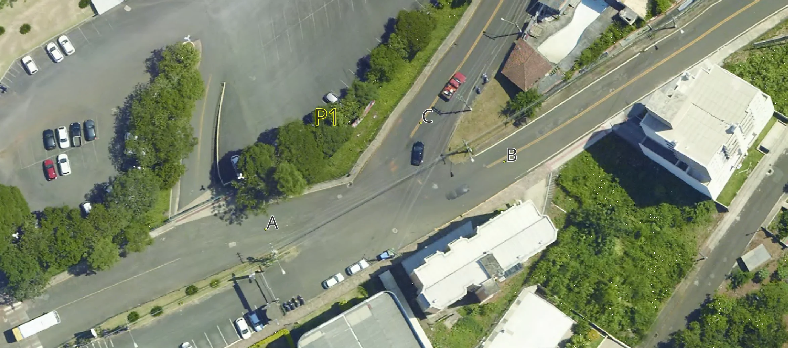
Figura 8.1 - Localização do ponto de contagem P01
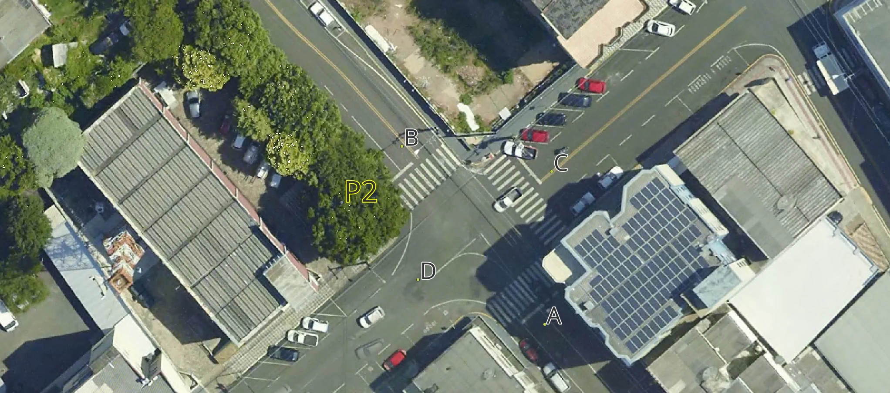
Figura 8.2 - Localização do ponto de contagem P02
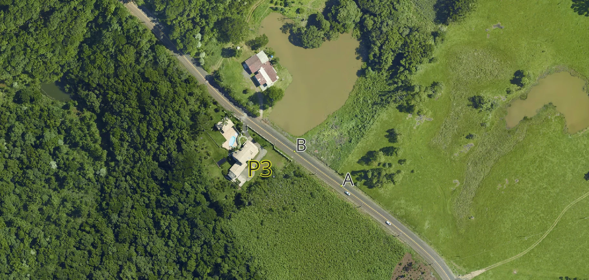
Figura 8.3 - Localização do ponto de contagem P03
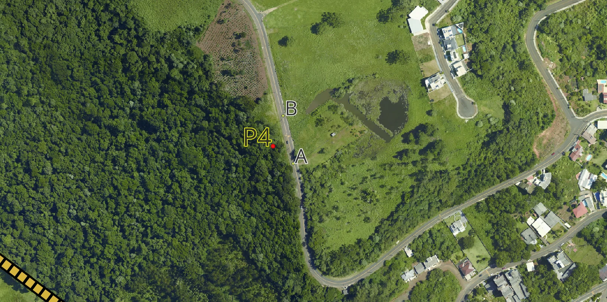
Figura 8.4 - Localização do ponto de contagem P04
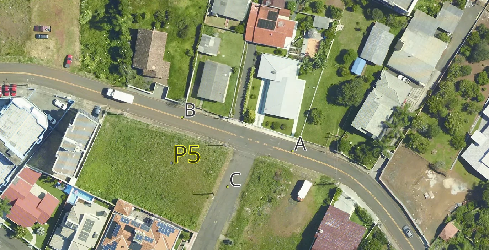
Figura 8.5 - Localização do ponto de contagem P05
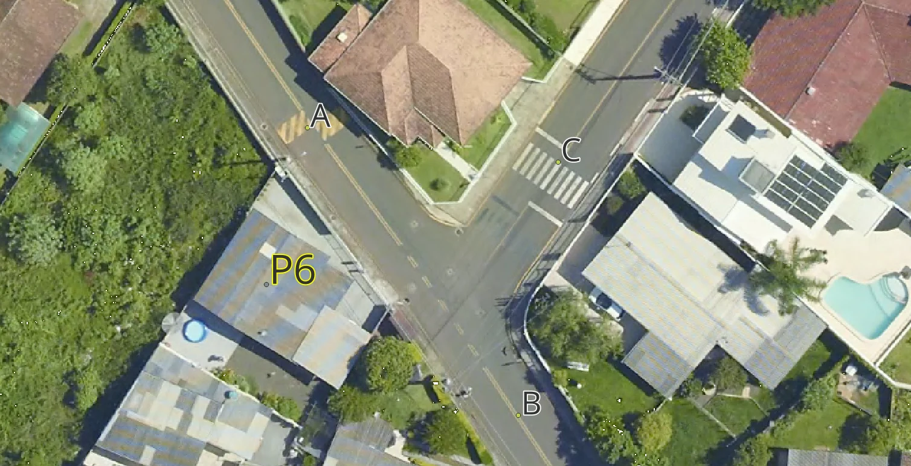
Figura 8.6 - Localização do ponto de contagem P06
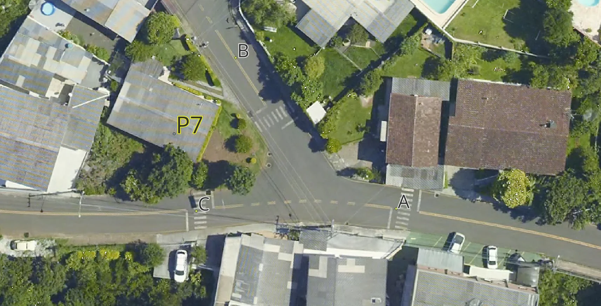
Figura 8.7 - Localização do ponto de contagem P07
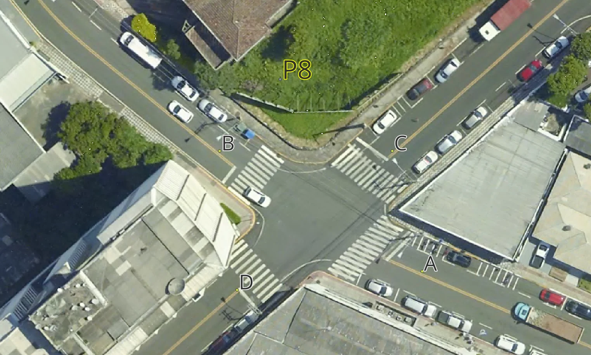
Figura 8.8 - Localização do ponto de contagem P08
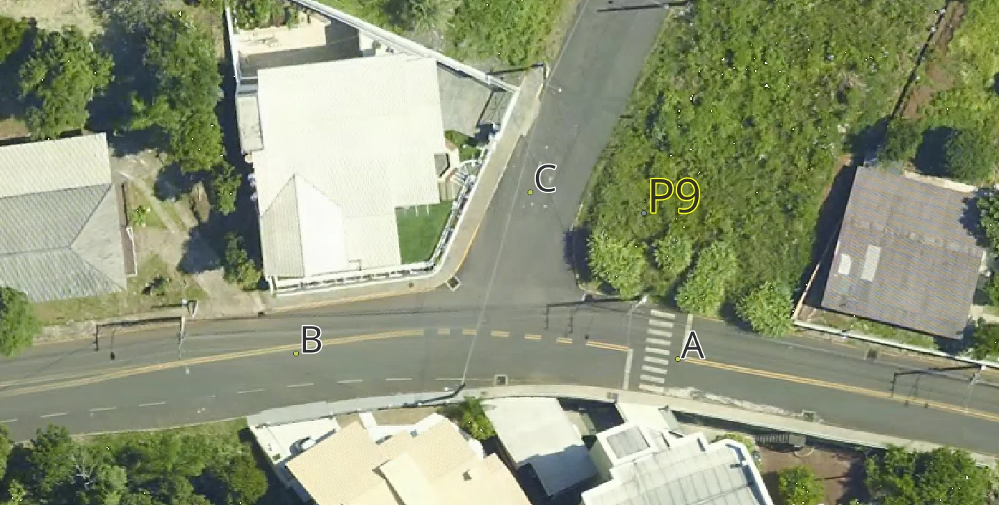
Figura 8.9 - Localização do ponto de contagem P09
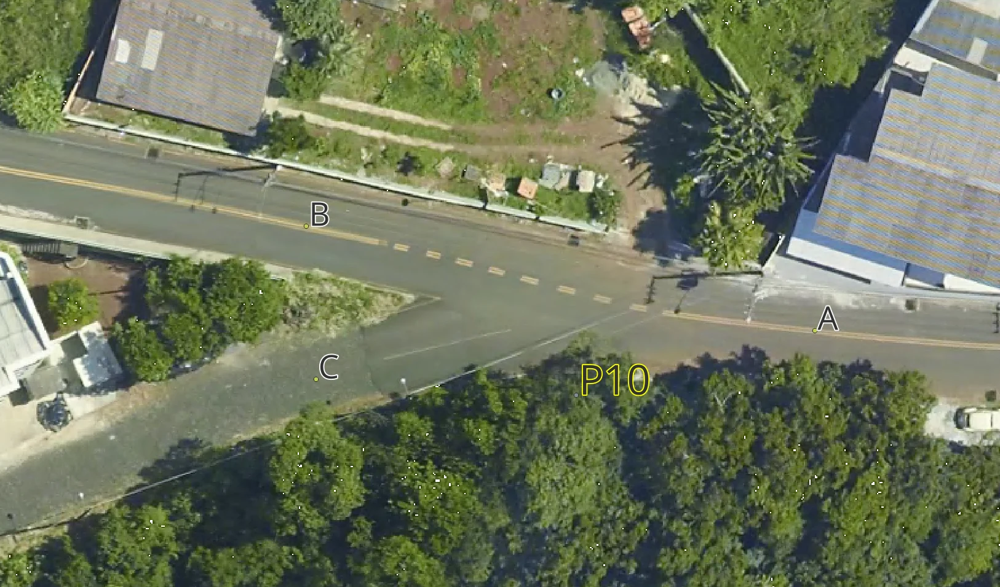
,Figura 8.10 - Localização do ponto de contagem P10
8.4.1 Critério de leitura das contagens volumétricas¶
As contagens volumétricas, classificatórias e direcionais utilizadas no estudo foram realizadas em diferentes pontos da rede viária, em datas e períodos específicos de medição, conforme indicado nos respectivos arquivos de origem.
Por esse motivo, diferenças de volume entre segmentos de um mesmo eixo viário, ou entre pontos próximos da rede, decorrem das condições próprias de cada levantamento, especialmente data, horário, localização do ponto, sentido analisado e movimentos intermediários existentes entre os pontos de medição.
Nos levantamentos realizados fora do período escolar, como no caso da medição de 22/01/2025, os valores em UCP foram ajustados com acréscimo de 15%. Esse ajuste foi aplicado para representar a condição típica de operação em período letivo, considerando a influência dos deslocamentos escolares e universitários sobre a circulação local.
Assim, a leitura das contagens considera os valores registrados em campo, o contexto temporal de cada medição e os ajustes técnicos aplicados para padronização da base utilizada na modelagem.
8.4.2 P01¶
Link para xlsx: Ponto_01_contagem_24h.xlsx (baixar XLSX)
O P01 representa o entroncamento entre a Rua Getúlio Vargas e a Rua Guilherme Lugisland, com medição realizada em 22/01/2026.
Os movimentos B-C, C-B e A-B concentram as maiores participações no volume total observado, servindo como referência para a calibração do nó P01 no HCM-LOS.
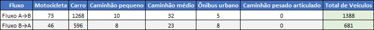
Tabela 8.5 - Volumes totais por movimento e classificação
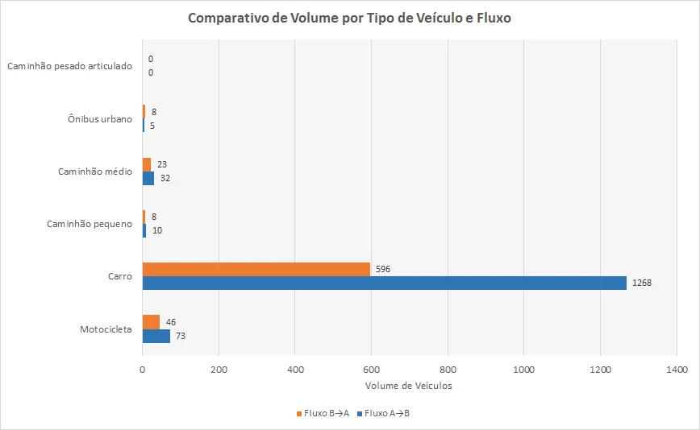
Gráfico 8.1 - Composição veicular
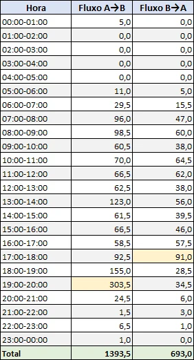
Tabela 8.6 - Volume UCP/Hora
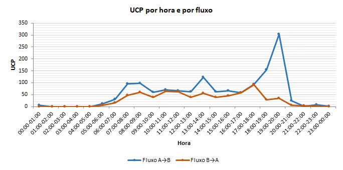
Gráfico 8.2 - Composição veicular
8.4.3 P02¶
Link para xlsx: Ponto_02_contagem_12h.xlsx (baixar XLSX)
O P02 corresponde ao entroncamento entre a Rua Getúlio Vargas e a Avenida Barão do Rio Branco, com medição realizada em 26/11/2024.
Os dados de origem foram recebidos em planilhas 4MOB, com estrutura distinta dos arquivos consolidados em Geral_Fluxos, sendo posteriormente padronizados para o formato adotado no sistema de processamento utilizado neste estudo.
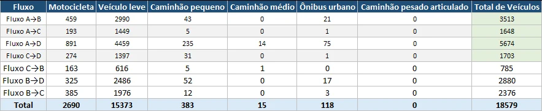
Tabela 8.7 - Volumes totais por movimento e classificação
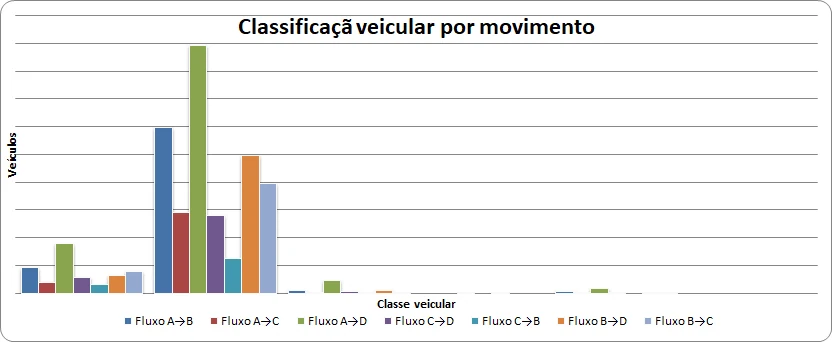
Gráfico 8.3 - Composição veicular
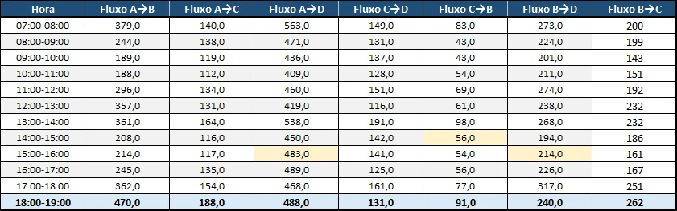
Tabela 8.8 - Volume UCP/Hora
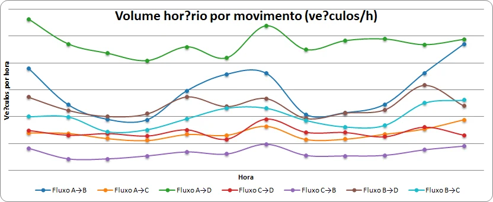
Gráfico 8.4 - Perfil horário de fluxo e UCP
8.4.4 P03¶
Link para xlsx: Ponto_03_contagem_24h.xlsx (baixar XLSX)
O P03 está situado na Rua Dr. José Firmo Bernardi, em frente ao empreendimento.
A medição foi realizada a partir de câmera instalada por terceiros, sendo disponibilizado ao estudo o vídeo completo de 24 horas. Para fins de processamento e análise, foi utilizada a gravação referente ao período de 10/12/2025.
A leitura principal indica assimetria direcional, com predominância do sentido A-B.
Tabela 8.9 - Volumes totais por movimento e classificação
Gráfico 8.5 - Composição veicular
Tabela 8.10 - Volume UCP/Hora
Gráfico 8.6 - Perfil horário de fluxo e UCP
8.4.5 P04¶
Link para xlsx: Ponto_04_contagem_24h.xlsx (baixar XLSX)
O P04 foi instalado na Rua Dr. José Firmo Bernardi, em frente ao Hospital da UNIMED, com medição realizada em 22/01/2026.
O ponto evidencia carregamento assimétrico, com presença relevante de veículos pesados e ônibus no sentido A-B.
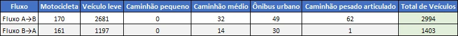
Tabela 8.11 - P04, Volumes totais por movimento e classificação
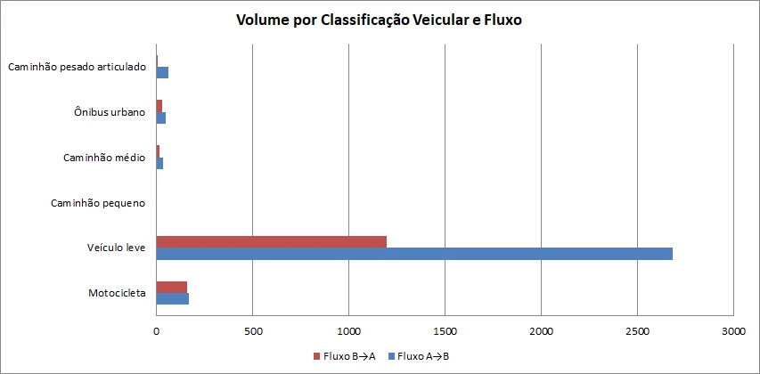
Gráfico 8.7 - Composição veicular
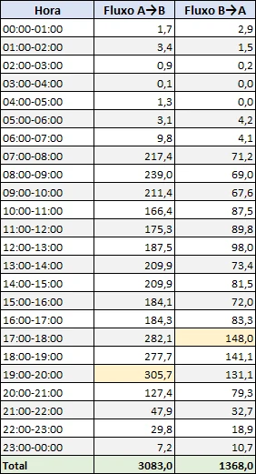
Tabela 8.12 - Volume UCP/Hora
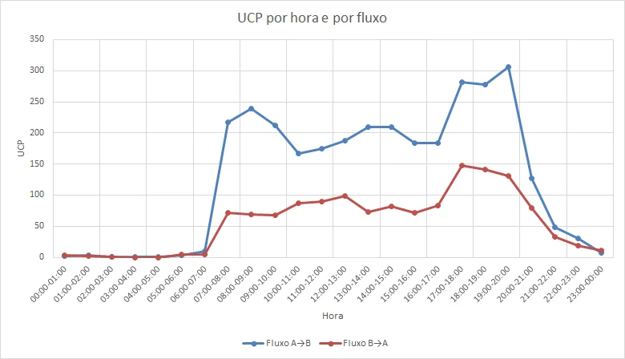
Gráfico 8.8 - Perfil horário de fluxo e UCP
8.4.6 P05¶
Link para xlsx: Ponto_05_contagem_15min_2025-03-11.xlsx (baixar XLSX); Ponto_05_contagem_15min_2025-03-12.xlsx (baixar XLSX)
O P05 corresponde ao entroncamento entre a Rua Dr. José Firmo Bernardi e a Rua Albino Holsbach, com levantamentos realizados por janelas de medição em 11/03/2025 e 12/03/2025.
O levantamento foi executado com uso de drone, em horário representativo de pico típico da circulação viária local. Em razão da curta duração das janelas de medição, os volumes registrados foram interpolados para o fechamento da hora de análise, permitindo sua compatibilização com a base de processamento adotada no estudo.
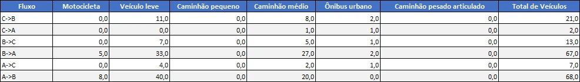
Tabela 8.13 - Volumes por movimento dia 11/03/2025
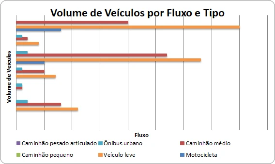
Gráfico 8.9 - Composição veicular dia 11/03/2025
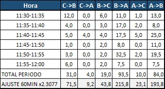
Tabela 8.14 - Volume UCP/Hora dia 11/03/2025
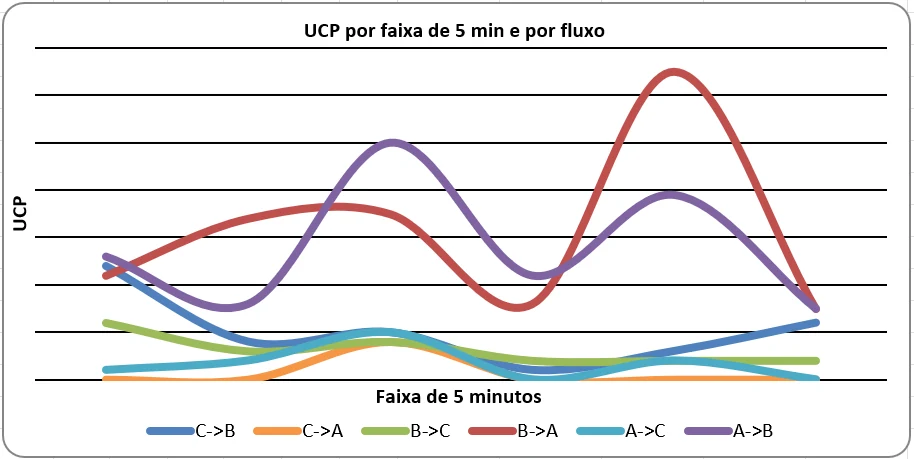
Gráfico 8.10 - Perfil horário de fluxo e UCP dia 11/03/2025
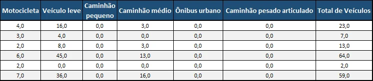
Tabela 8.15 - Volumes totais por movimento e classificação dia 12/03/2025
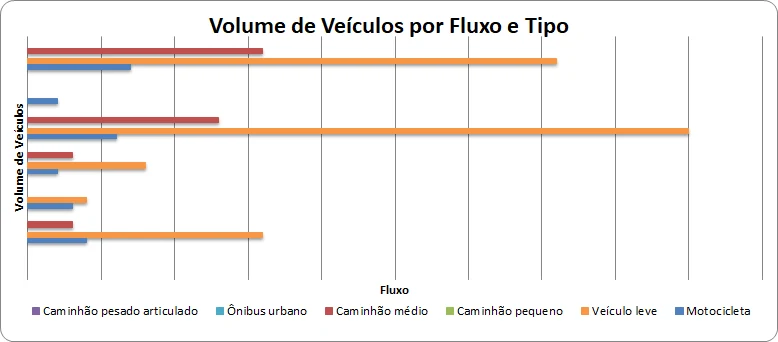
Gráfico 8.11 - Composição veicular dia 12/03/2025
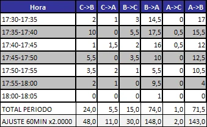
Tabela 8.16 - Volume UCP/Hora dia 12/03/2025
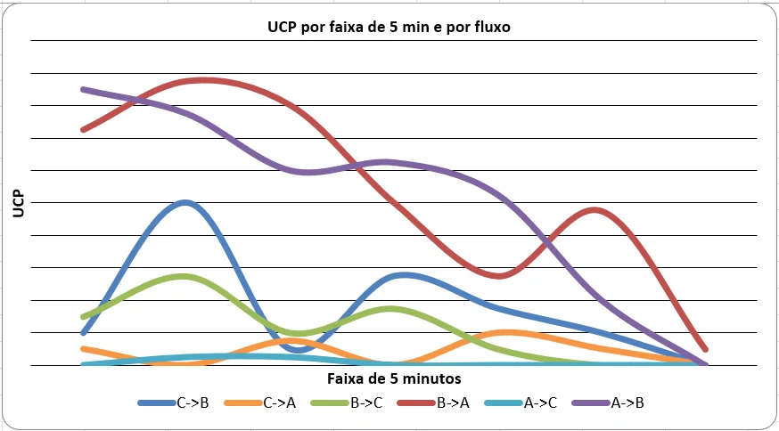
Tabela 8.17 - Perfil horário de fluxo e UCP dia 12/03/2025
8.4.7 P06¶
Link para xlsx: Ponto_06_contagem_15min_2024-04-11_2024-04-12.xlsx (baixar XLSX); Ponto_06_contagem_24h.xlsx (baixar XLSX)
O P06 corresponde ao entroncamento entre a Rua Dr. José Firmo Bernardi e a Rua Celso Braz de Carli, com medição realizada em 22/01/2026.
O estudo registra maior carregamento nos movimentos B-C e A-B, utilizados como referência para a leitura operacional e calibração do ponto no modelo.
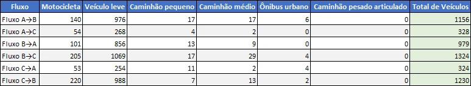
Tabela 8.18 - P06, Volumes totais por movimento e classificação
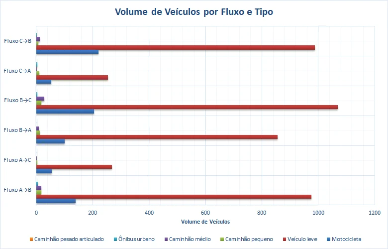
Gráfico 8.12 - Composição veicular
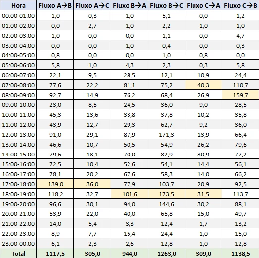
Tabela 8.19 - Volume UCP/Hora
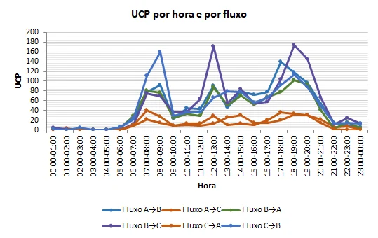
Gráfico 8.13 - Perfil horário de fluxo e UCP
8.4.8 P07¶
Link para xlsx: Ponto_07_contagem_24h.xlsx (baixar XLSX)
O P07 representa o entroncamento entre a Rua Sete de Setembro, a Rua Guilherme Lugisland e a Rua Dr. José Firmo Bernardi, com medição realizada em 23/01/2026.
Além de ponto de contagem, o P07 constitui nó de leitura operacional específica da rotatória prevista para o local, sendo utilizado como referência para a avaliação dos movimentos existentes e para a análise comparativa da condição futura proposta.
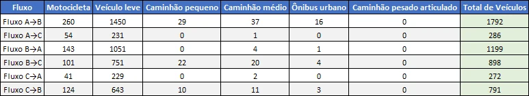
Tabela 8.20 - Volumes totais por movimento e classificação
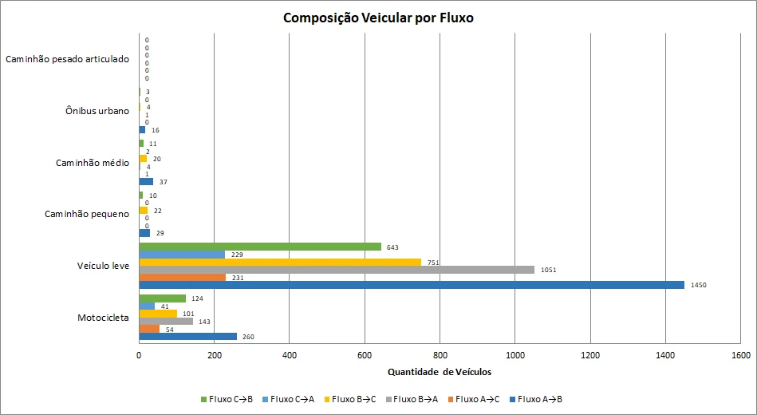
Gráfico 8.14 - Composição veicular
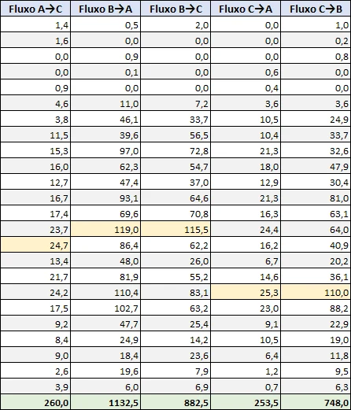
Gráfico 8.15 - Volume UCP/Hora
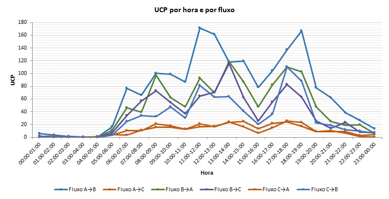
Gráfico 8.16 - Perfil horário de fluxo e UCP
8.4.9 P08¶
Link para xlsx: Ponto_08_contagem_12h.xlsx (baixar XLSX)
O P08 corresponde ao cruzamento da Rua Sete de Setembro com a Rua Salgado Filho, cujo levantamento foi realizado em 26/11/2024. Os dados disponibilizados pela empresa responsável foram posteriormente padronizados para compatibilização com o padrão metodológico adotado no presente estudo. Registra-se, contudo, ressalva quanto à coluna “Total UCP”, cuja leitura e consolidação dependem de conferência específica na planilha-fonte.
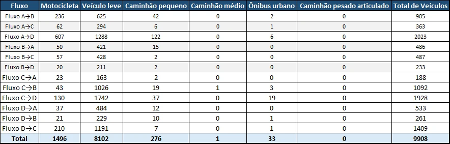
Tabela 8.21 - Volumes totais por movimento e classificação
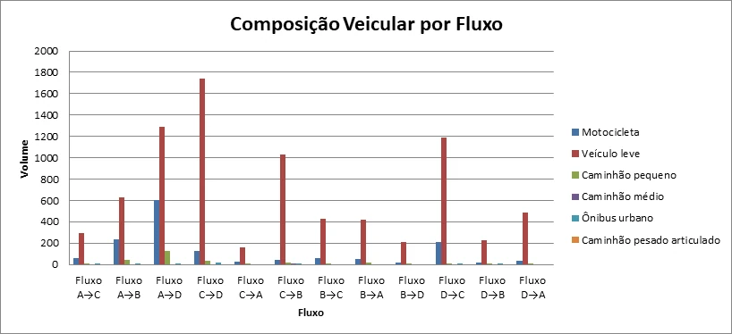
Gráfico 8.17 - Composição veicular
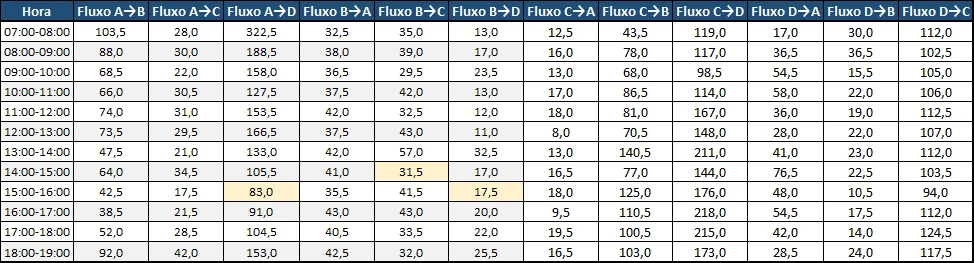
Tabela 8.22 - Volume UCP/Hora
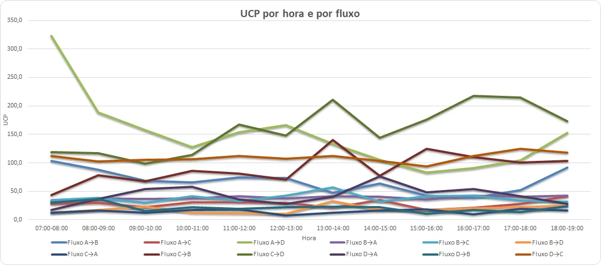
Gráfico 8.18 - Perfil horário de fluxo e UCP
8.4.10 P09¶
Link para xlsx: Ponto_09_contagem_15min_2025-03-11.xlsx (baixar XLSX); Ponto_09_contagem_15min_2025-03-12.xlsx (baixar XLSX)
O P09 corresponde ao cruzamento da Rua Guilherme Lugisland com a Rua Albino Holsbach, cujo levantamento foi realizado nos dias 11/03/2025 e 12/03/2025. A coleta dos dados foi realizada com apoio de drone, permitindo o registro aéreo do fluxo viário e a posterior análise, classificação e padronização das informações conforme o padrão metodológico adotado no presente estudo.
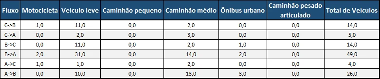
Tabela 8.23 - Volumes totais por movimento e classificação dia 11/03/2025
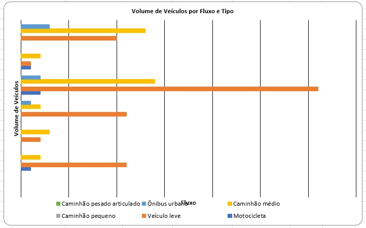
Gráfico 8.19 - Composição veicular dia 11/03/2025
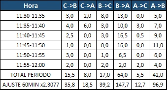
Tabela 8.24 - Volume UCP/Hora dia 11/03/2025
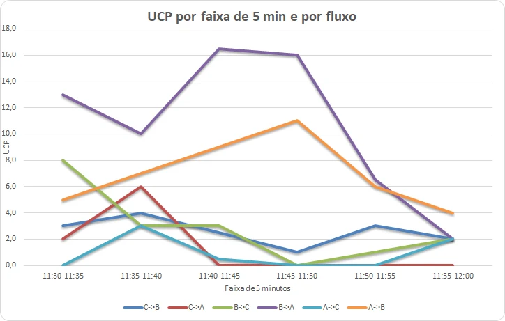
Gráfico 8.20 - Perfil horário de fluxo e UCP dia 11/03/2025
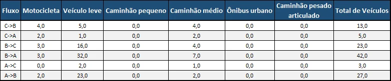
Tabela 8.25 - Volumes totais por movimento e classificação dia 12/03/2025
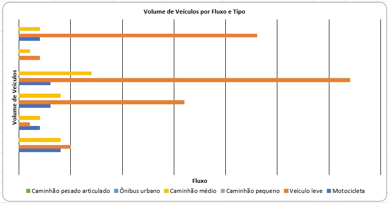
Gráfico 8.21 - Composição veicular dia 12/03/2025
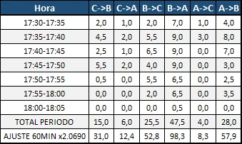
Tabela 8.26 - Volume UCP/Hora dia 12/03/2025
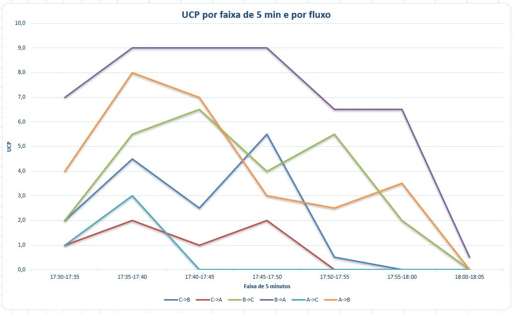
Gráfico 8.22 - Perfil horário de fluxo e UCP dia 12/03/2025
8.4.11 P10¶
Link para xlsx: Ponto_10_contagem_15min_2025-03-11.xlsx (baixar XLSX); Ponto_10_contagem_15min_2025-03-12.xlsx (baixar XLSX)
O P10 corresponde ao cruzamento da Rua Guilherme Lugisland com a Rua Idalino Machado de Lima, encerrando a cadeia de leitura da Rua Guilherme Lugisland no setor analisado. O levantamento foi realizado nos dias 11/03/2025 e 12/03/2025, com apoio de drone, permitindo o registro aéreo do fluxo viário e a posterior análise, classificação e padronização das informações conforme o padrão metodológico adotado no presente estudo.
Tabela 8.27 - Volumes totais por movimento e classificação dia 11/03/2025
Gráfico 8.23 - Composição veicular dia 11/03/2025
Tabela 8.28 - Volume UCP/Hora dia 11/03/2025
Gráfico 8.24 - Perfil horário de fluxo e UCP dia 11/03/2025
Tabela 8.29 - Volumes totais por movimento e classificação dia 12/03/2025
Gráfico 8.25 - Composição veicular dia 12/03/2025
Tabela 8.30 - Volume UCP/Hora dia 12/03/2025
Gráfico 8.26 - Perfil horário de fluxo e UCP dia 12/03/2025
8.5 Síntese diagnóstica dos levantamentos¶
Os levantamentos de tráfego confirmam a concentração dos maiores volumes nos eixos estruturadores do corredor Oeste de Joaçaba. O maior carregamento aparece no P02, localizado na interseção da Avenida Barão do Rio Branco com a Rua Getúlio Vargas, com 18.579 veículos consolidados e pico horário às 18h-19h, indicando forte participação desse nó na distribuição principal dos fluxos urbanos. Também se destacam o P08, na Rua Sete de Setembro com a Rua Salgado Filho, com 9.908 veículos e pico às 13h-14h, o P01, na Rua Getúlio Vargas com a Rua Guilherme Lugisland, com 5.814 veículos e pico às 18h-19h, o P06, na Rua Dr. José Firmo Bernardi com a Rua Celso Braz de Carli, com 5.341 veículos e pico às 18h-19h, e o P07, associado à Rua Sete de Setembro, com 5.238 veículos e pico às 17h-18h.
Nos trechos da Rua Dr. José Firmo Bernardi, os dados indicam comportamento direcional relevante. O P03, em frente ao empreendimento, registra 2.069 veículos no consolidado principal, com predomínio do fluxo A-B sobre o fluxo B-A, enquanto o P04, em frente à UNIMED, apresenta 4.397 veículos, também com maior participação no sentido A-B. Esses resultados reforçam a leitura de assimetria operacional no corredor e justificam a análise separada dos sentidos de circulação na modelagem.
Os pontos complementares e de sub intensidade ajudam a caracterizar movimentos locais e conexões secundárias do sistema. No P05, Rua Dr. José Firmo Bernardi com a Rua Albino Holsbach, os maiores movimentos observados concentram-se nos fluxos A-B e B-A. No P09, Rua Guilherme Lugisland com a Rua Albino Holsbach, predomina o movimento B-A nas duas janelas analisadas. No P10, Rua Guilherme Lugisland com a Rua Idalino Machado de Lima, os volumes também se concentram nos movimentos B-A, A-B e C-A, indicando função mais localizada de distribuição.
Assim, as contagens sustentam a montagem dos cenários no HCM-LOS ao diferenciar os eixos de maior carregamento, os pontos de distribuição principal e as conexões locais de apoio. As tabelas completas por classe veicular, gráficos horários, diagramas direcionais e imagens das planilhas permanecem no Capítulo 16, enquanto o Capítulo 8 apresenta as sínteses necessárias para compreender a origem dos volumes adotados na modelagem do sistema viário atual e do sistema viário alterado.
Navegação: ← Anterior | Sumário | Próximo →